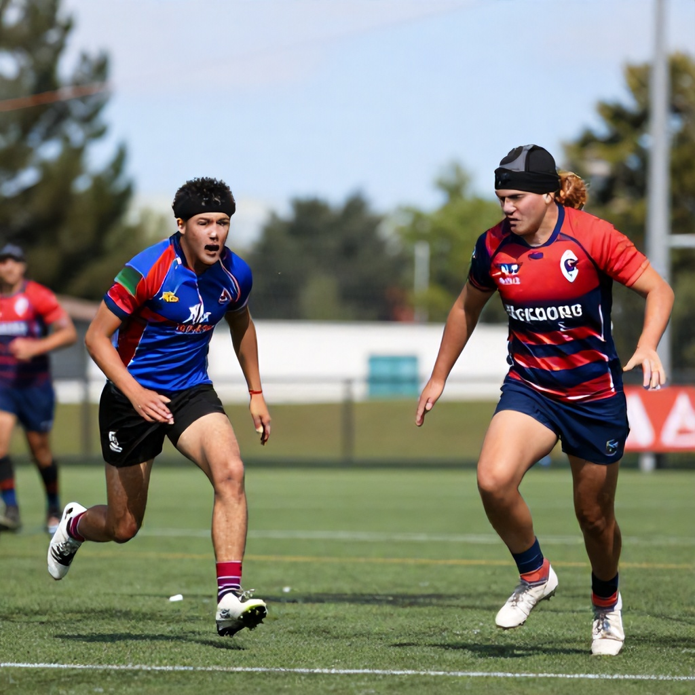

The BC Lions head into their matchup against the Saskatchewan Roughriders with a mix of optimism and caution, as they look to continue building momentum in what has been a challenging season. With the Roughriders sitting at a modest record, the Lions are expected to hold the advantage in this week’s CFL showdown.
Game Preview: BC Lions vs Saskatchewan Roughriders
Scheduled for June 14th at 1:00 PM ET, the game between the BC Lions and Saskatchewan Roughriders is being closely watched by fans and bettors alike. According to Sports Select odds, the Roughriders are listed as the underdog at +110, while the Lions are priced at +155. The spread line stands at -125 for the Lions and +125 for the Roughriders, indicating a narrow margin of victory expected from BC.
The total points line is set at 52.5, suggesting a competitive back-and-forth affair that could see both teams score consistently. With the CFL’s unique rules—such as the three-down system, 20-second play clock, and larger field—this game promises to be an exciting test of strategy and execution.
Key Factors to Watch
The Lions’ offense, led by their quarterback and running game, will need to maintain consistency to keep pace with the Roughriders. Meanwhile, Saskatchewan’s defense has shown resilience in recent weeks, particularly in limiting big plays and forcing turnovers.
In terms of betting, the moneyline offers a balanced approach for those who want to side with the favorites. However, the +110 odds on the Roughriders present a compelling value play if you believe they can capitalize on a few key opportunities. For those seeking a safer bet, the Lions’ -125 spread line may offer a better return with a slightly higher probability of covering.
Conclusion
As the CFL season continues to unfold, each game becomes increasingly vital for playoff positioning. The BC Lions will look to build upon their current form, while the Roughriders aim to prove they’re more than just a rebuilding team. Whether you're backing the favorites or looking for value in the underdog, this matchup provides solid betting options for fans who enjoy strategic wagers.
With a projected total of 52.5 points, expect a high-scoring affair that showcases the CFL’s dynamic style of play.